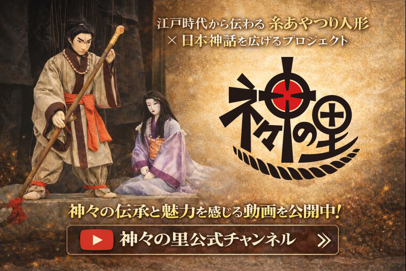

好みのスピーカーからわかるエンジニアタイプ診断
Operate with / Own / Also Like を選ぶだけ（重複OK）。結果は日本語・英語で表示＆X投稿できます。
Input / 入力
Name / 名前
表示名（任意）
Result Language / 結果の言語
Japanese / 日本語 🇯🇵
English / 英語 🇺🇸
Speaker Selection / スピーカー選択
1️⃣ Operate with
使いたいスピーカー
2️⃣ Own / Would Buy
購入・所持したいスピーカー
3️⃣ Also Like
これも好きなスピーカー
Diagnose / 診断する 🔎
Post to X / Xに投稿 🐦
Copy X Text / 投稿文をコピー
Duplicates OK / 重複OK
Link → Diagnosis URL / 診断URLへ
X Preview / X投稿プレビュー（自動280字）
Result / 結果
左で入力して「Diagnose / 診断する」を押してください。
